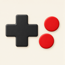
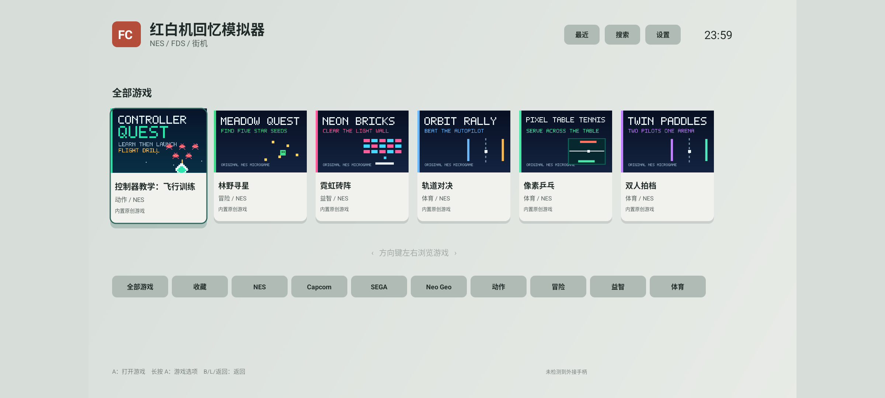

红白机与超任
NES / Famicom · FDS
SNES / Super Famicom

Retro ConsoleAndroid TV, macOS & Apple TV available
为客厅距离重新设计的游戏资料库。连接自己的 NAS 或资料库服务器，在 Android TV 与 Mac 上浏览、收藏、存档并继续游玩。

一个资料库，多种客厅设备
Supported game systems
这里列的是当前公开版的系统范围。部分游戏需要另备 BIOS，街机需要匹配的完整 ROM 集；同一平台的具体游戏兼容情况可能不同。
NES / Famicom · FDS
SNES / Super Famicom
Mega Drive / Genesis · Mega CD / Sega CD
32X · Master System · Game Gear · SG-1000
Game Boy · Game Boy Color · Game Boy Advance
WonderSwan / Color · Neo Geo Pocket / Color
Atari 2600 · Atari 5200 · Atari 7800
PlayStation（PS1）
PC Engine / TurboGrafx-16 · PC Engine CD
Neo Geo · Capcom · SEGA · Konami · Taito
IGS PGM 等已适配街机驱动
Made for ten feet away
Downloads
Android TV 与 macOS 下载安装包，Apple TV 在 App Store 搜索「红白机街机模拟器」。安装包都不包含商业游戏、BIOS 或私有密钥；请只导入你有权使用的内容。
macOS 1.3.7：修复部分 NES 游戏兼容性；点击关闭按钮最小化主窗口，点击 Dock 图标即可恢复。
Retro Console for Android TV
APK · 直接安装包SHA-256: 75126a398ce3aa5b2091d1d0aa57c92d548850984d8ba7ec31d43fec1c5409c9
Retro Console for macOS
DMG · APPLE SILICONSHA-256: f8c1c5a1e4e25f6ce8ce7dcae4ff271faca45ef7f2382ff7fcd88247754c8c0c
红白机街机模拟器 · Retro Console
APPLE TV · 在 APP STORE 搜索「红白机街机模拟器」Three steps
Android TV：把 APK 发送到电视，用文件管理器或 ADB 安装，首次侧载需允许未知来源。macOS：打开 DMG，把应用拖进「应用程序」即可，安装包已签名并通过 Apple 公证。
Mac 可以在「ROM 管理」中导入并管理本地游戏，无需先安装服务器；也可以进入设置连接群晖资料库。查看 macOS 安装与配置说明 →
蓝牙或 USB 手柄均可。长按确认键打开游戏选项，可收藏、管理缓存和查看游戏信息。
Library server 1.3.4
服务器端统一整理 ROM、封面、分类和存档，可运行在 Windows、macOS、Linux 或群晖 DSM 7。
查看服务器端 →Private by design
应用不会把 ROM、封面、存档、资料库地址或游玩记录发送给开发者。客户端只连接你明确配置的设备。
阅读完整隐私政策 →